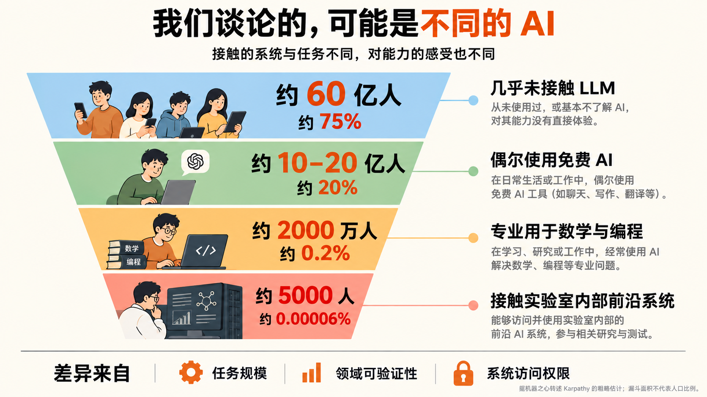
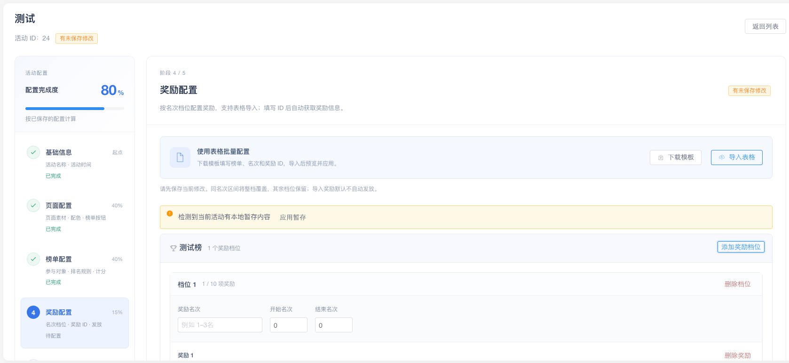
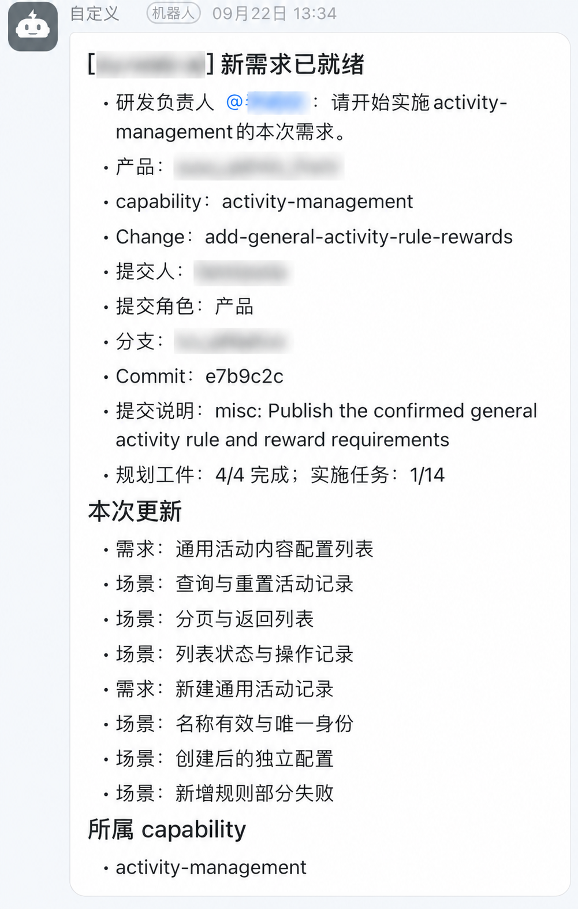
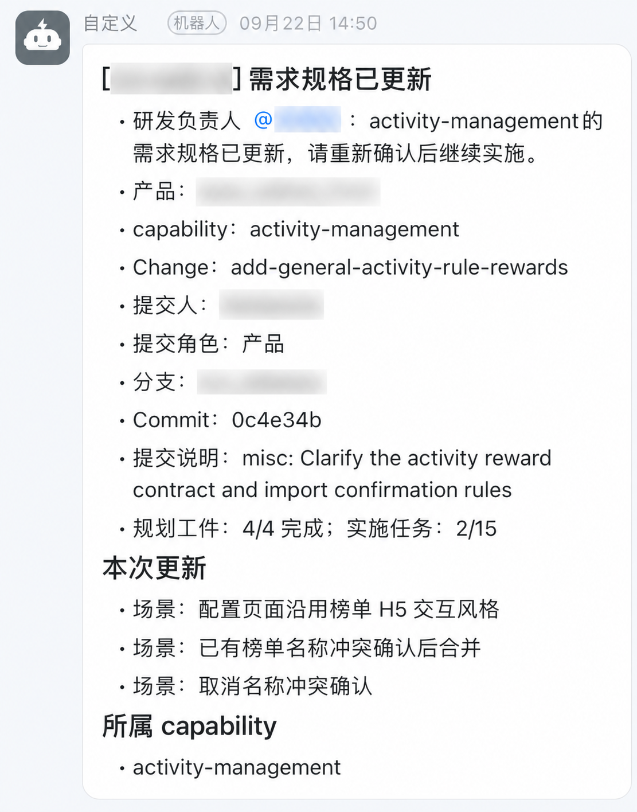
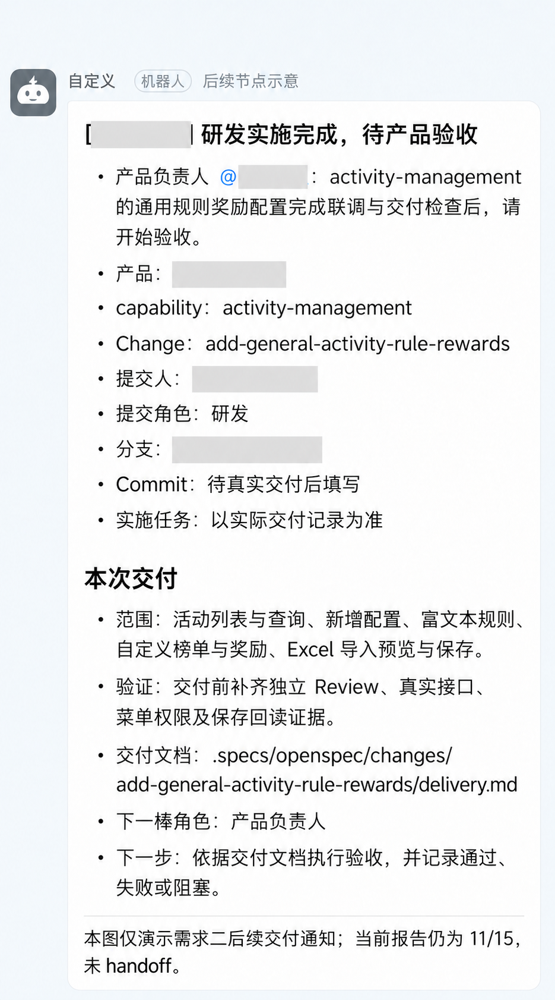
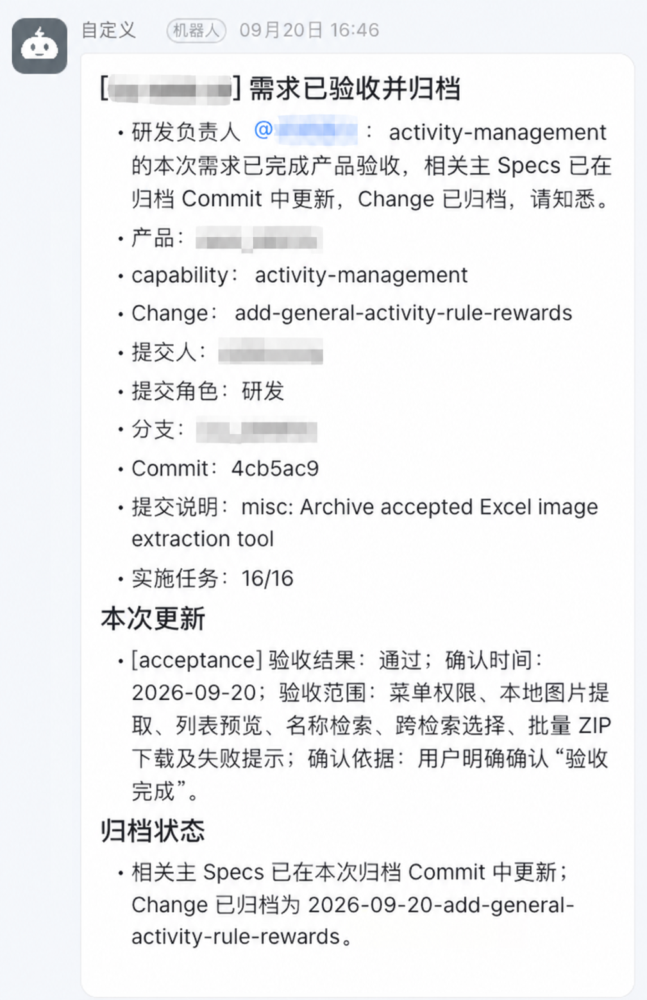
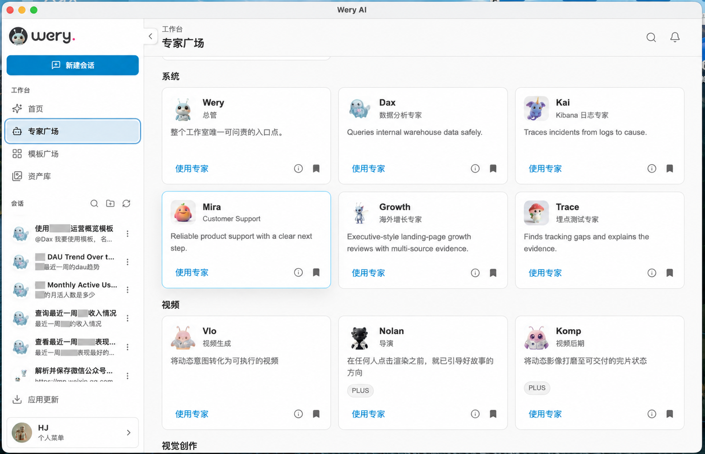

列表、规则与奖励维护
活动列表，按 ID / 名称查询与分页。
新增活动，独立路由维护富文本规则。
自定义榜单 key、名称、名次档位与奖励。
数据操作奖励 ID 查询回显；
Excel 模板、导入、预览与保存。
模型能力 · 研发交付 · 组织协作
从个人使用 AI，到团队持续交付

来源：机器之心转述 Karpathy 的粗略估计，非人口统计；漏斗面积不代表比例。文章所附原帖链接
口径反复，边界遗漏
代码生成与修改加快
证据不足，返工增加
负责人等待，上下文丢失
先实测模型能稳定完成什么，再发现产品机会，以真实用户价值校准。
围绕任务、权限和验收设计分工；人保留关键判断与结果责任。
阅读原始文档与代码，在自己的任务上评测，持续更新能力边界。
Vibe Coding 工程化
通过规格、测试、评审与验收，
让 AI 编码进入团队交付流程。
把业务流程变成可执行任务
通过业务知识、工具、权限与验证，
让 Agent 进入日常业务流程。
减少需求反复解释与交接等待
让验证更早发生，降低返工
观察：验收周期、退回原因、任务总成本
小范围产品试验
按需分析与更细粒度的业务服务
观察：用户是否采用、结果是否有用
| 维度 | 观察指标 | 比较时的约束 |
|---|---|---|
| 速度 | 从需求进入到验收的周期 | 包含等待与返工 |
| 质量 | 验收退回、回归缺陷、线上故障 | 同类任务、相同验收口径 |
| 自主程度 | 自主完成率、人工介入原因 | 明确统计终点是待审还是上线 |
| 成本 | 模型 + 环境 + 人工（实施、审核、返工） | 观察每个合格任务的总成本 |
团队用得上
投入看得清
做什么
怎样算完成
理解项目
理解业务事实
执行与验证
失败时能停下
下一次少解释
少犯重复错误
Codex
WorkBuddy
业务 Agent / 内部工具
以 New API 等开源项目起步
身份与密钥 · 模型路由
配额限流 · 用量与费用
授权的模型 API
企业可管理的调用资源
验证鉴权、协议、流式响应与工具调用。为使用者提供配置模板与诊断入口。
将密钥与预算关联部门、项目及使用范围；跟踪费用、失败率与异常消耗。
把调用记录与需求、PR、测试报告关联，观察返工和审核是否抵消收益。
围绕同一份需求，明确范围、实现依据、验证证据与验收责任。
产品确认目标与范围
明确边界与验收标准
记录场景与取舍
拆分实现、验证任务
Agent 实现并验证
研发汇总版本与证据
群内交接给产品
验收后复盘归档
为何需要变更
哪些用户受影响
需求范围与权限边界
可验证的验收场景
复用现有模块与接口
明确方案与关键取舍
拆分实现与验证
补齐交付与验收任务
示例场景：无权限用户操作被拒绝，授权用户只能访问允许范围内的功能与数据。
| 角色 | 执行与判断 | 交接时留下什么 |
|---|---|---|
| 产品负责人 | 确认价值、范围与验收结果 | 业务口径、验收结论 |
| 研发负责人 | 确认方案，负责实现与交付质量 | 实现版本、验证证据与风险 |
| QA / 测试负责人 | 按交付记录执行测试验收 | 测试结果、缺陷与复测证据 |
| Agent | 在授权范围内实现、验证和报告阻塞 | 改动、执行记录与待决事项 |
| 平台 / 工具维护者 | 维护接入、权限与共享能力 | 配置、能力版本与运行记录 |
| 交接时点 | 接收人 | 下一步 |
|---|---|---|
| 需求待确认 | 需求确认人 | 确认目标、范围与验收标准 |
| 实现者已分配 | 需求实现者 | 完成方案设计，判断是否需要审核 |
| 方案已就绪 | 需求实现者 | 按方案推进测试与实现 |
| 研发已交付 | QA / 产品负责人 | QA 执行验收，产品确认业务结论 |
| 验收已通过 | 需求负责人 | 完成复盘，同步主规格并归档 |
同一个后台新模块，分别采用 SDD 与 AGENTS + Plan，使用相同模型。
活动列表，按 ID / 名称查询与分页。
新增活动，独立路由维护富文本规则。
自定义榜单 key、名称、名次档位与奖励。
数据操作奖励 ID 查询回显；
Excel 模板、导入、预览与保存。
保存字段与成功码的接口约定。
菜单权限与真实后端联调。
未保存离开、保存失败与异步请求保护。
观察重点首次实现、反馈返工、测试覆盖，
以及什么状态才算交付。
SDD 后实施；代码基础与 Review 强度不同。证据来自会话、Git 与验证记录，不含生产运行数据。

步骤导航与配置状态集中呈现
模板下载、表格导入与名次档位
未保存修改与本地暂存提示
SDD 在开发前确认的关键约束 · 根据报告第6.3节整理
| 决策内容 | 开发前确认什么 |
|---|---|
| 配置结构 | 支持自定义榜单 key，明确审计字段 |
| 接口结果 | 明确成功码与保存结果的判断方式 |
| 奖励发放 | 确认采用手动发放 |
| Excel 结构 | 奖励列按需生成，避免固定列假设 |
| 名称冲突 | 确认后合并；取消确认时不执行合并 |
这是本次 SDD 的决策记录；实现后尚无同类返工，不等于真实联调与产品验收已通过。
AI 活跃时间不含用户等待；首版耗时另列墙钟口径，不能混为工时
| 指标 | SDD | AGENTS + Plan |
|---|---|---|
| 需求提出 → 首次实现（墙钟） | 4 小时 43 分 | 2 小时 25 分 |
| 前置规划 AI 活跃时间 | 58 分 16 秒 | 27 分 33 秒 |
| 首轮编码 AI 活跃时间 | 52 分 26 秒 | 40 分 58 秒 |
| 首次实现后代码返工 | 会话内未发生 | 47 分 44 秒 |
| 总 AI 活跃时间 | 113 分 09 秒 | 116 分 14 秒 |
| 用户反馈修正 | 主要在实现前确认 | 首次实现后约 9 轮 |
规划、首轮编码与返工不是穷尽分项，不直接相加为总时间；本次尚未完成真实联调与产品验收。
AGENTS + Plan 首次实现后约 9 轮反馈，相关返工累计 47 分 44 秒。
保存字段改为 award_id、object_type。
保存后重新编辑，补齐奖励详情回显。
修复底部吸附区域露出滚动内容。
奖励层级、间距与输入框尺寸调整。
详情同行回显、图片预览、文本折行。
Excel 奖励列按需生成。
已有完整详情时取消重复查询。
视觉偏好不自动计为功能 Bug；尚未联调与验收，不能把“未返工”理解为“零缺陷”。
两边测试集不同；测试数量反映覆盖记录，不能直接换算质量或缺陷率
| 验证项 | SDD | AGENTS + Plan |
|---|---|---|
| 通用模块自动测试 | 22 项 | 11 项 |
| 相关回归 | 额外 20 项既有模块回归 | 首轮执行过更广测试 |
| 构建 | 通过 | 通过 |
| 模拟 UI 验证 | 真实组件 + fixture | 本地模拟交互 |
| HTML 安全验证 | 6/6 | 记录服务端、消费端约束 |
| 独立 Review | 未执行 | 发现并修复 2 个问题 |
对照模块测试 11 项为最终 Git 记录；HTML 安全项与其他测试是否重叠，报告未说明。
工件、提交与通知是流程投入记录，不能视为业务产出
| 流程记录 | SDD | AGENTS + Plan |
|---|---|---|
| 规格及验证工件 | 约 657 行 / 8 个文件 | 联调文档 82 行 |
| 规划提交 | 2 次 | 0 次 |
| 实现 / 收敛提交 | 1 次 | 2 次 |
| 钉钉通知 | 需求发布、规格更新 | 无 |
| 生命周期状态 | 11/15，未 handoff | 无正式状态机 |
对照也未完成真实联调。保留未完成状态有助于避免把“前端实现完成”误读为“整体交付完成”。


同一 Change 关联规格与 Commit，通知列出场景和下一步行动。
补充配置页交互风格、名称冲突确认合并与取消规则。
任务由 1/14 变为 2/15；新增任务使分母变化，不是进度倒退。


真实接口、菜单权限、保存回读与独立 Review；delivery.md 关联版本、证据与下一棒。
记录产品验收结论，形成复盘，
同步主规格并归档。
群内消息提示下一步行动；具体结论、版本与验证证据留在仓库中。
单项后台配置需求的观察，不外推为所有需求的固定提效比例
| 观察维度 | 本次结果 |
|---|---|
| 速度 | 对照首版更快；总 AI 活跃时间基本持平 |
| 返工位置 | SDD 主要在实现前确认；对照首版后约 9 轮反馈 |
| 验证与交付 | SDD 异常覆盖更完整；独立 Review、联调与验收仍需补齐 |
Direct：低风险文案、样式与配置
Lean SDD：有状态的 UI 或单模块变更
Full SDD：新接口、权限、复杂导入
产品需求确认与研发实施就绪分开。
补齐独立 Review、真实联调与产品验收。
统一范围与口径，交替实施顺序再比较。
相关模块与调用关系
鉴权入口、数据模型
启动方式与关键路径
AGENTS.md 入口
通用 / 团队 / 项目规则
任务适用的 Skill
权限与业务边界测试
检查命令、验收场景
运行证据与失败现场
需求范围与业务口径是否明确？复用哪些能力，是否还有待决事项？
检查权限、异常与业务边界，结合调用方和测试证据评审改动。
| 触发条件 | 系统或团队的动作 |
|---|---|
| 需求 / 权限不清 | 暂停相关执行，交给对应负责人 |
| 验证反复失败 | 限制重试，保留现场与失败原因 |
| 时间 / 费用超限 | 停止并交接已有结果 |
| 影响数据、权限或生产环境 | 进入对应人工审批与回滚流程 |
记录遗漏的场景
及其复现证据
判断是任务特例
还是可复用的知识
负责人确认后更新 Rules 或 Skill
按任务加载，失效后更新或归档
产品与设计 · Coding Agent · 质量与交付
业务服务 · 运营分析 · 风险诊断 · 职能管理

专家广场集中展示能力
通过“使用专家”进入任务
日志定位、数据分析
增长、客服、埋点测试
视频生成、导演与后期
模板广场与资产库
提供模板与资源的访问入口
尚未纳入工作方式
超级个体涌现
团队协作开始
AI 原生组织雏形
AI 原生组织
根据某云计算厂商的会议分享，结合自身实践整理，作为讨论框架。
多 Agent 不是所有团队的终点；按任务需要选择协作方式，以交付结果判断价值。
一个团队、一类重复需求，先跑通规格到产品验收的完整链路。
| 同类任务的观察结果 | 下一步 |
|---|---|
| 验收周期缩短，质量稳定，总成本可接受 | 扩大到相邻任务，继续记录结果 |
| 等待减少，但审核或返工增加 | 定位介入原因，补规格、上下文或验证 |
| 质量下降，成本超限或权限风险未解决 | 暂停扩大范围，修复后重新评估 |
期待与各位同行交流实践
杭建@微鲤科技